この講義で覚えて欲しいこと2つ
- OPC（One-Person Company）：AIでエンタメは一人ビジネスになっています。（中国の2年後、日本でも）
- ショートドラマが、全てのエンタメのIP：制作コストが激安になったショートドラマが、あらゆるエンタメの起点になります。
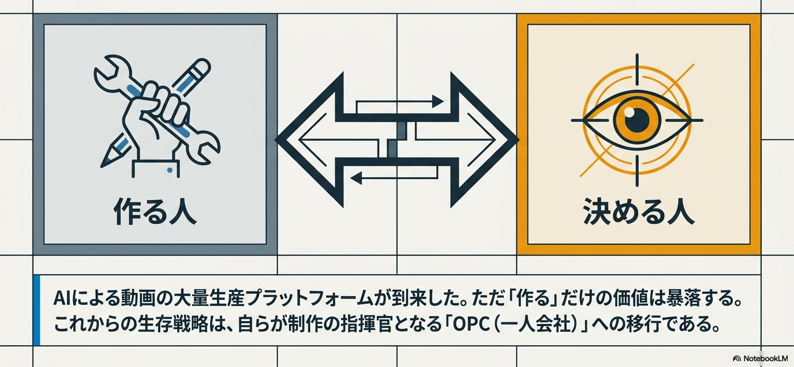
60分タイムテーブル
| 区切り | 時間 | 内容 | キーワード |
|---|---|---|---|
| 1 | 0–18分 | AIが変えるエンタメの制作とビジネス（実写×AI・IP360度・コスト崩壊・需給） | 実写vs AI・IP360度・99.5%減・無尽蔵 |
| 2 | 18–27分 | OPCがエンタメの未来になる（中国が見せる先取りされた未来） | 一人会社・上海微短劇大会 |
| 3 | 27–38分 | 映像サプライチェーンの変化（使い捨て表現／分業制→マルチエージェント・監督） | 使い捨て表現・マルチエージェント・監督 |
| 4 | 38–56分 | これからどうするか（3つの武器：決める力・文脈/関係・歴史とアウラ） | 決める力・文脈と関係・アウラ |
| 5 | 56–60分 | クロージング：最後の問い | 何を握り続けるか |
第1部：AIが変えるエンタメの制作とビジネス
1-1同じ作品を、人間とAIで作った ── 制作が変わる
あるショートドラマ『君を王子にするまで30日』を、人間の俳優が演じて撮った実写版と、まったく同じ物語をAIだけで作り直したアニメ版——2つのバージョンを、数十秒ずつ見比べてみてください。
（縦型 / 約57秒）
（縦型 / 約1分50秒）
── アニメ版には、俳優も、カメラも、撮影現場もありません。声すらAIです。
同じ作品。でも"作り方"でこれだけ変わります
| 実写版人間が制作 | アニメ版AIが制作 | |
|---|---|---|
| 制作時期 | 2025年9月 | 2026年2月 |
| 制作期間 | 4ヶ月 | 3週間 |
| 制作費用 | 1,000万円 | 200万円 |
同じ物語が、期間およそ1/6・費用1/5に。AIは、エンタメの「作り方」を根こそぎ変えました。
1-2AIで実写ドラマを制作 ── アニメだけじゃない
実在の俳優が演じているように見えますが、役者も撮影もなく、すべて生成AIです。
AIが作れるのは、アニメだけではありません。実在の俳優が演じているとしか見えない"実写"のドラマも、いまやAIだけで作れます。この映像は、すべて生成AIで作られた実写風の日本のショートドラマです。役者も撮影現場もありません。
1-3ショートドラマが"原作"になる ── ビジネスが変わる
変わったのは作り方だけではありません。稼ぎ方（ビジネスの形）も変わっています。これまでの王道は「マンガ → アニメ → ドラマ」で、原作はいつもマンガでした。ところが、いまその順番が逆転しはじめています。先にショートドラマがヒットし、それが"原作"になって、コミックにもアニメにも広がっていく——従来とは逆向きの、新しいコンテンツ・パイプラインです。
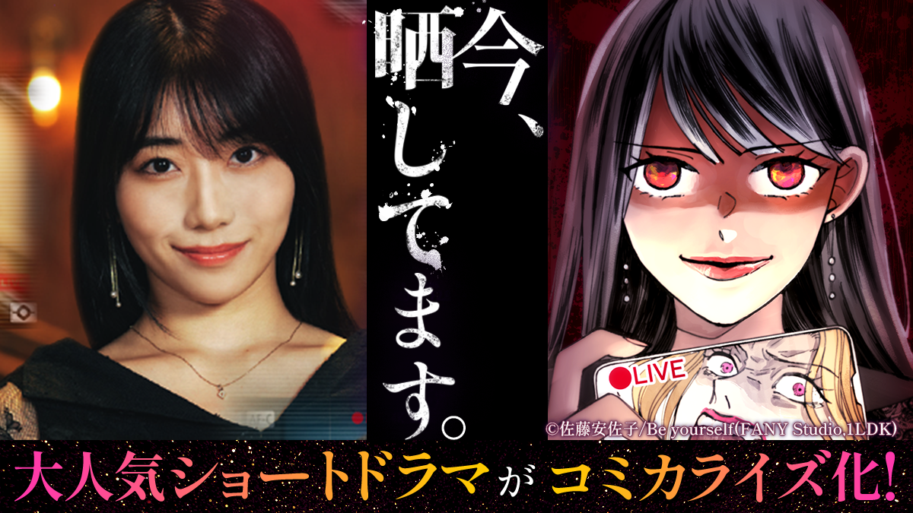
1つの物語（IP）を、ドラマ・コミック・アニメ・グッズ・舞台/ライブへ——あらゆる形へ同時に広げるのが「IP360度展開」です。決定的なのは、AIを使えば、この展開が一気に速く・安くなることです。さきほどの実写→アニメ化が3週間・200万円でできたように、コミック化も海外ローカライズも、桁違いのスピードで回せるようになります。
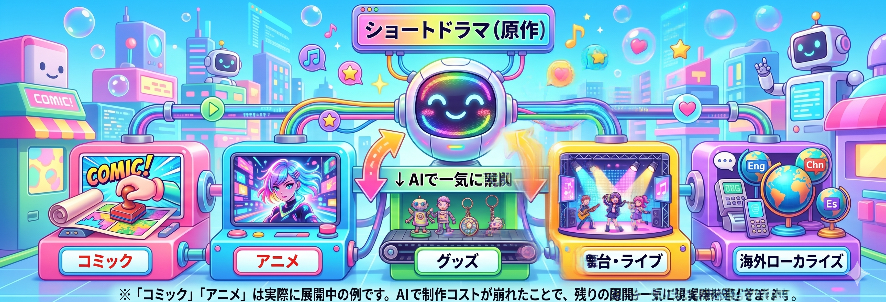
作るコストが崩れ、1つのIPが360度に広がる——これがいま、エンタメの"制作"と"ビジネス"に同時に起きていることです。
→ では、その「作るコスト」は、どこまで安くなったのでしょうか。具体的な数字で見てみましょう。
1-4AIが変える制作の常識 ── コストはどこまで下がるか
ここまで見てきた実写・アニメ・AI実写のように、AIは映像制作の工程そのものを置き換えはじめています。同じ"映像作品"を作るのに、従来のテレビドラマ、いま伸びている縦型のショートドラマ、そしてAIをフル活用した制作で、人・時間・お金がどう変わるか並べてみます。
制作コストの激安化
| ドラマ（従来） | ショートドラマ | AIフル活用 | |
|---|---|---|---|
| 企画制作（体制） | 大規模チーム 数十〜100人超 | 少人数チーム 数人〜十数人 | 少人数＋ AIエージェント |
| 撮影・キャスティング | 実写ロケ＋スタジオ 俳優をキャスティング（出演料） | 簡易な実写撮影 少人数の出演者 | 撮影ゼロ キャストもAIが生成 |
| 制作期間 | 数ヶ月〜年単位 | 数日〜数週間 | 半日〜1日 「一日一本」のペースも |
| 制作コスト | 数千万〜数億円 | 数十万〜数百万円 | ほぼAI利用料のみ 最大99.5%減 |
作るための「人・時間・お金」が、桁ごと消えていきます。これだけ速く・安く・大量に作れるということは——世の中に映像作品が無尽蔵にあふれるということです。これが、「供給が増えると、価値が下がる」の正体です。
1-5コストが崩れると、何が起きるか ── 供給と価値
大事なのは「クオリティが上がった」ことではありません。作るコストが崩れたことです。昔は30秒の映像をそれっぽく作るのに、人・機材・時間・お金が必要でした。いまは、AIを使えば午後いっぱいで、ある程度のものを出せます。
上で見たコスト構造を、中国の現場は数字でも裏づけています。3月の上海で、AIショートドラマ制作プラットフォーム各社が発表した数字です（各社プレゼンテーションより）：
※これらは各社のプレゼン上の主張で、誇張もあるかもしれません。でも「桁が変わった」というオーダー感は、現地で複数のプラットフォームが競うように出してきた数字でした。方向性は間違いなくこちらに向かっています。短尺・縦型ドラマの世界では、量を、速く、安く——その勝負の分野ほど、AIが先に入っていきます。
ここで、経済の基本を一つ。モノの値段は需要と供給で決まります。供給が増えれば、ひとつあたりの価値（価格）は下がります。コストが崩れるということは、映像作品の"供給"が、事実上"無尽蔵"になるということです。下のグラフがその到達点です——供給が無限に増えるほど、1作品あたりの価値は"希少＝高い"から、ゼロに向かって落ちていきます。これがAI時代の出発点です。
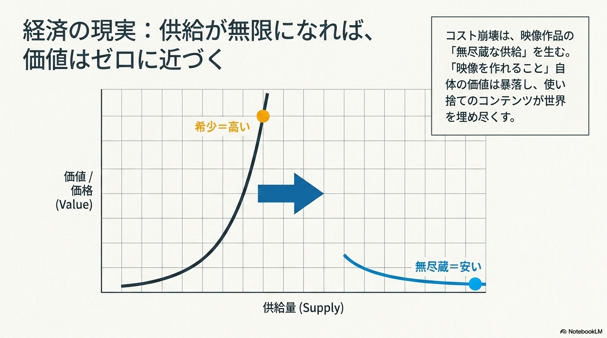
横軸＝映像作品の供給量、縦軸＝1作品あたりの価値。希少だったうちは高く、無尽蔵になれば限りなく安くなります。AIによる「作れること」のコモディティ化が、この曲線を一気に右へ進めています。
作るコストが崩れ、映像が無尽蔵にあふれていく——この現実をいち早く利用して、新しい人種・ビジネスモデルが立ち上がっています。
→ それが「OPC（一人会社）」。震源地・中国で私が見てきた話に移ります。
第2部：OPCがエンタメの未来になる ── 中国が見せる"先取りされた未来"
2-1上海現地から ── 3月、微短劇大会で見た熱気
今年の3月10日、第3回「上海微短劇大会」（上海广播电视台＆静安区主催）に参加しました。テーマは「AIGCが駆動するショートドラマ産業の新地平」。政府・企業・研究機関・制作者が一堂に会す大規模な産業会議です。その大会の外でも、行く先々である言葉が飛び交っていました——「OPC」。
現地レポート ── 写真3枚で見る
2026年3月10日／第3回 上海微短劇大会にて撮影
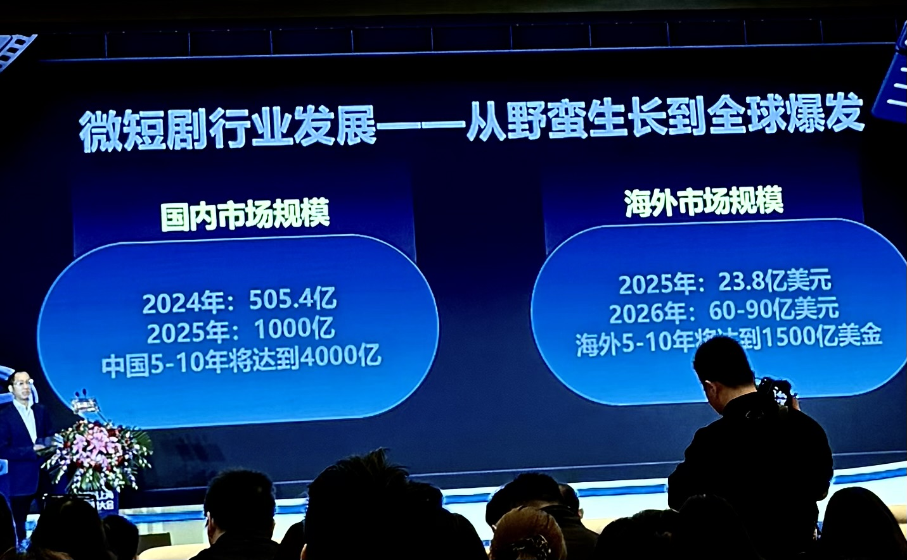
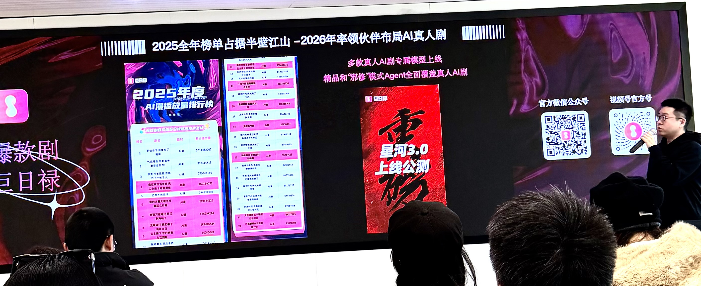
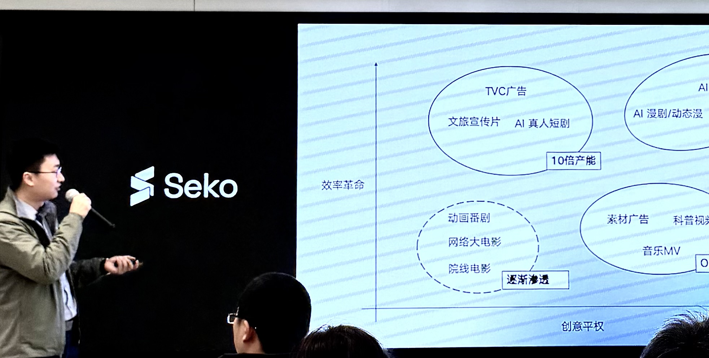
2-2OPCとは何か ── 一人が、会社になる
OPC ＝ One Person Company（一人会社）
個人が、AIの支援を受けて、企画・開発・マーケティング・顧客対応まで、会社の全工程を一人で回す——そういう起業・組織のかたちです。重要なのは、これが「個人の頑張り」の話ではなく、社会の仕組みとして立ち上がっていることです。中国では地方政府が競ってOPC専用のインキュベーション拠点を作っています。
よく聞かれるのが「フリーランスと何が違うのか」です。いちばんの違いは、次の3点に集約されます。
OPC と フリーランスの違い
| OPC（一人会社） | フリーランス | |
|---|---|---|
| ビジネスモデル | 自分でIP資産を保有 | 受託仕事 |
| スキル・役割 | 労働はAIが代替。 アイデア・経営判断に特化 | 専門スキルに特化 |
| サプライチェーン | 企画から販売まで一人で実施 | 脚本・撮影・編集など 1領域を担当 |
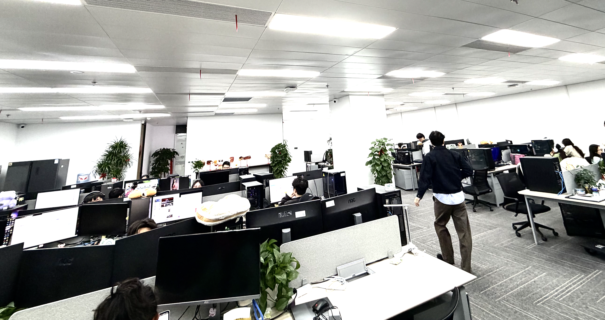
背景には、自律型AIエージェント（AIが自分で段取りして作業する）の急速な普及があります。
2-3OPCで作られる映像 ── 上海・OPCの世界
「OPC」という言葉とセットで、現地ではこんな映像が次々に共有されていました。一人＋AIで作られた、ショートドラマや広告の実例です。
OPC＝AI制作の映像
「一人で一日一本」を可能にしつつある、AI制作のショート作品。
上海の中国人OPCが、中国向けにAI制作している動画。中国にいる日本好きな人向け。
こうした作品を、一人＋AIで作り続ける——これが、いま中国で立ち上がっているOPC（一人会社）の現場です。
→ では、この変化は、映像制作のサプライチェーンそのものを、どう作り変えるのでしょうか。
第3部：映像サプライチェーンの変化
変わること①"使い捨ての表現"があふれる
作る値段が崩れると、コンテンツの量が爆発します。量が爆発すると、世の中は「使い捨ての表現」で埋まります。スワイプして、ドーパミンが出て、3秒で忘れる短い刺激。AIがいくらでも量産できます。
でも人間が本当に時間とお金を使うのは、そちらではありません。「また観たい」「この人だから観る」と思える、重層的なもの。希少なものが入れ替わります。「作れること」はもう希少ではありません。「選ばれること」が希少になります。
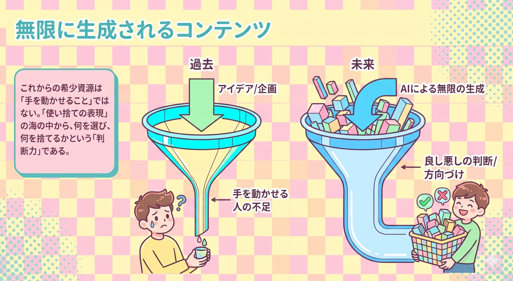
変わること②「分業制」から、マルチタスクなAIに任せるスタイルへ
映像制作は長く、専門性の高い「分業制」で回ってきました。脚本家が書き、撮影が撮り、編集がつなぎ、音響が仕上げる——工程ごとに専門家がバトンをつなぐ"サプライチェーン"です。ところがAIは、複数の工程をまたいで（マルチタスクに）担えます。脚本のたたき、絵づくり、動画化、音声まで一気通貫で流せる。だから現場は「各工程の専門家をそろえる」から「マルチタスクなAIに任せ、人はそれを差配する」スタイルへ移っていきます。
この「複数のAIを一本の作業フローにつなぐ」動きをマルチエージェントといいます。上海で見たプラットフォームは、脚本を入れると分割・絵コンテ生成・素材制作・音声合成・編集まで、AIが自動で段取りを組んで流していました。人間の仕事は「ツールを使う」から「ツールを指揮する」へずれていきます。
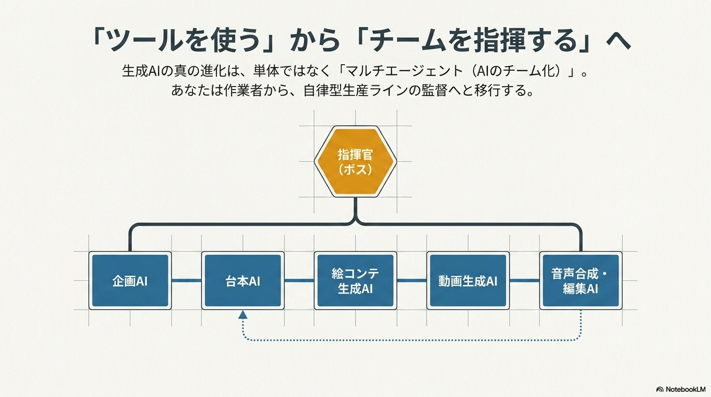
すると、詰まりどころ（ボトルネック）も移ります。これまでは「手を動かせる専門人材が足りない」ことが詰まりどころでした。AIが"手"を肩代わりすると、希少資源は「AIを差配し、方向と良し悪しを決められる人」へ移ります。
立ち位置は「自分が手を動かすプレイヤー」から「AIと人の混成チームの監督」へ移ります。AIを"道具"ではなく"チーム"として扱い、役割を持った何人か（のAI）に仕事を振り分けて束ねる——この監督業は、まさに裏方の本業です。上海のプラットフォームも「監督の思考プロセス・演出の暗黙知」をシステムに組み込んでいました。裏方の専門知識こそ、AIシステムの設計に一番必要なものです。
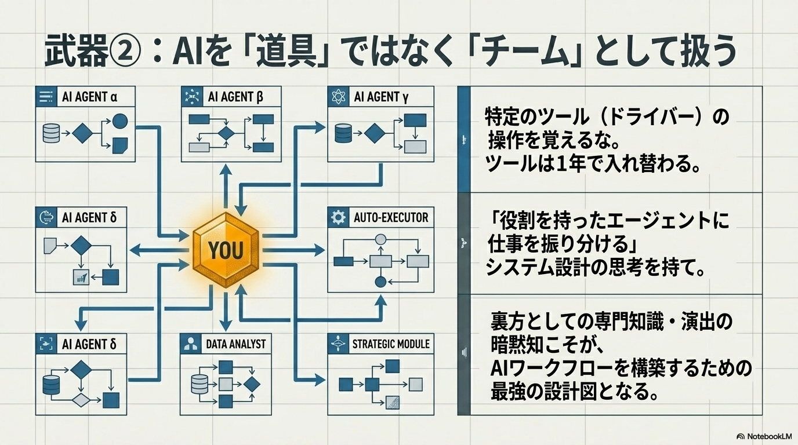
職種ごとに具体化すると、こうなります：
構成作家／企画
AIが台本のたたきを10本出します。価値は「どれを選び、どこを切り、企画の核を一言で言えるか」へ移ります。
映像ディレクター
AIが素材を量産します。価値は「トーンを決め、引き算する」へ移ります。
デジタルプロデューサー
AIと人を混ぜたチームを采配する役割が増えます。
マネージャー
スケジュールや分析はAIが速くなります。残るのはタレントとの信頼関係——絶対に肩代わりされません。
第4部：これからどうするか ── 3つの武器
①「作る力」より「決める力」
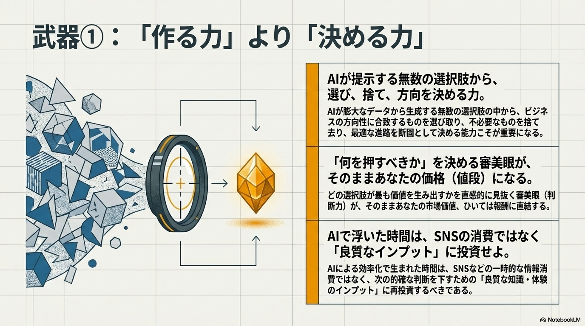
これからはAIが選択肢を山ほど出します。選び、捨て、方向を決める力が、これからの値段になります。「ボタンを押すだけの人」は要らなくなります。「何を押すべきか決める人」は、絶対に必要です。決める力は「たくさん見て、自分の基準を持つこと」でしか育ちません。AIで浮いた時間を、SNSの消費ではなくインプットの質に回します。それが投資です。
②自分の「文脈」と「関係」を資産にする
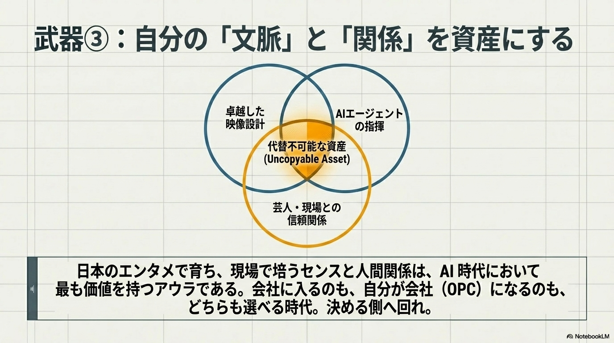
AIで誰でも同じ品質を出せる時代、差がつくのは"その人にしかない文脈"です。どんな現場を見たか、誰と信頼を築いたか、何を面白いと思うか。コピーできないものだけが、自分の資産になります。日本のエンタメで育ってきたセンスや世界観は、AI時代にこそ価値を持ちます。捨てるのではなく、磨いていきましょう。スキルは「掛け算」で跳ねます。「映像×AI×芸人と信頼を築ける」——掛けるほど代わりがいなくなります。代わりがいない人が、自分の値段を自分で決められます。
③歴史の大局観を持つ ── 「複製技術」とアウラ
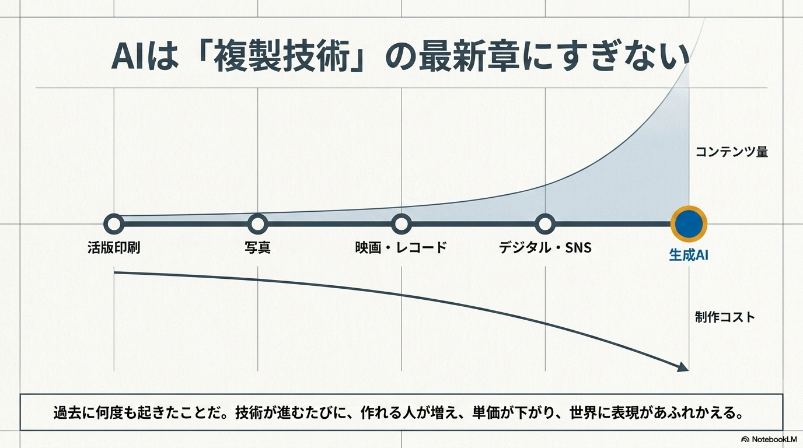
最後の武器は、目の前のツールより一段引いた大局観です。いま起きていることは、歴史上はじめてのことではありません。人類はずっと「表現を、安く、たくさん複製する技術」を発明し続けてきました。印刷、写真、レコード、映画、テレビ、デジタル、SNS。そのたびに作れる人が増え、作る値段が下がり、世の中に表現があふれたのです。生成AIは、その列のいちばん新しい一台にすぎません。だから「AIで世界が終わる」でも「AIで全部解決」でもなく、過去に何度も起きたことが、また起きている——そう捉えると、冷静に向き合えます。
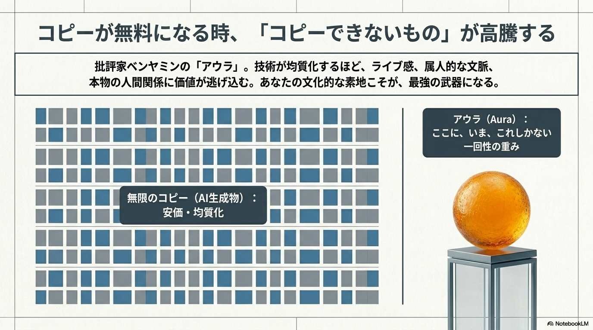
そして毎回、同じ逆転が起きます。複製が安くなるほど、「コピーできないもの」の価値が逆に上がるのです。さきほど武器②で触れた"その人にしかない文脈や関係"——あれには名前があります。
アウラ（Aura）
20世紀の批評家ベンヤミンの言葉です。ざっくり言うと「ここに、いま、これしかない、という一回性の重み」のこと。ライブで生で見た芸人のネタと、あとで切り抜きで見た同じネタ。なんとなく違いますよね。その"なんとなく違う"がアウラ。複製にコピーできない部分です。
複製技術が進むと、アウラは消える……のではなく、居場所を変えます。AIで「それっぽいもの」が無限にタダで作れる時代だからこそ、ライブ感、その人だからこその文脈、本物の関係性に価値が逃げ込みます。上海の会議でも中国の制作会社が同じことを言っていました。「技術はどんどん均質化していく。でも、その技術を使って何を語るか——そこにある文化的な素地こそが、コピーできない強みになる」。日本に引きつければ——マンガ・アニメ・ゲームで培ってきた世界観構築力や演出の「間」こそが、AI時代においてこそ価値を持ちます。
ひとつだけ注意点もあります。スタジオ一個ぶんの制作力が個人の手のひらに来た（分散）一方で、その"魔法の道具"を作る会社は世界に数社しかありません（集中）。「個人が強くなった」だけを見ると、足をすくわれます。「誰の道具に乗っているのか」を同時に見る目も、大局観のうちです。
クロージング ── 最後の問い
AIの動画生成が"作り手"を自動で大量生産する時代です。ただ"作る人"の価値は下がっていく——でも、それは終わりではありません。"作る側"から"決める側"へ回ればいいのです。中国で見たOPC（一人会社）は、脅しではなく、その選択肢が増えた、という話です。会社に入るのも、自分が会社になるのも、どちらもアリな時代になりました。OPCは、エンタメの未来のひとつのかたちです。
持ち帰ってほしいこと
AIが"作り手"を自動で大量生産する時代です。"作る人"の価値は下がり、価値は"決める人"へ移ります。だから——それを踏まえた人生設計が必要です。
OPC（一人会社）こそ、エンタメの未来です。
- ・「ボタンを押すだけの労働者」→「制作チームのボス」へ（AI会社が宣言しています）
- ・中国のOPC（一人会社）＝ 数年後のプレビュー
── この4つは、そのまま"一人会社"の経営マニュアルです。
Q & A
Q.AIに仕事を取られませんか？
Q.OPC（一人会社）って、結局フリーランスと何が違うんですか？
Q.日本でもOPCは増えますか？
Q.どのAIツールを覚えればいいですか？
Q.Seko・Juriluは日本でも使えますか？
出典メモ
自社事例（第1部）
- 株式会社NTTドコモ・スタジオ＆ライブ（第1部の自社事例：実写×AI・「今、晒してます。」コミカライズ・IP360度展開の出典）
- 縦型ショートドラマアプリ「FANY:D」（同社の縦型ショートドラマ配信プラットフォーム）
上海微短劇大会レポート（第1部・第2部のAI制作プラットフォーム情報のもと）
- 一般社団法人日本ショート動画協会「2026上海微短劇大会 現地レポート：AIGCが駆動するショートドラマ産業の新地平」（2026年3月11日）note.com/shortassosiation
- Seko（商湯科技）：コスト99.5%削減・制作期間80–90%短縮・半日で業務開始（同社プレゼン）／「ボタンを押すだけの労働者から制作チームのボスへ」（Sekoのプラットフォーム思想）
- 巨日禄（Jurilu）：「一人で一日一本」の効率目標（同社プレゼン）
OPC関連
- 「中国OPC発展トレンド報告（2025–2030年）」（中関村人材協会）── AFPBB News（2026年4月16日）
- 中国網日本語版／レコードチャイナ（2026年3月）── 済南市・蘇州・深センの各支援策
- AFPBB News（2026年4月）── 広東省 省レベルOPC特化支援計画
※数字は各社プレゼン・報道時点の値。PR的誇張を含む可能性があり、方向性として捉えること。公の場で述べる際は当日の最新情報と照合を。